Question 1 [3]
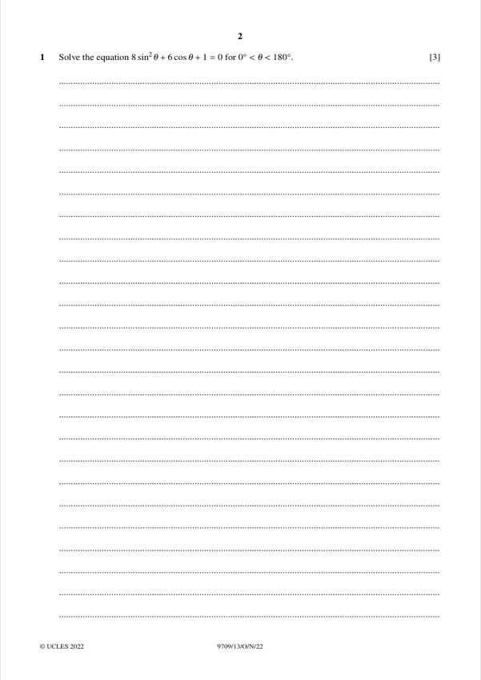
Original paper page 2
Solve 8sin²θ + 6cosθ + 1 = 0 for 0° < θ < 180°.
8(1 − cos²θ) + 6cosθ + 1 = 0 → 8cos²θ − 6cosθ − 9 = 0
(4cosθ + 3)(2cosθ − 3) = 0
cosθ = −3/4 (cosθ = 3/2 has no solution)
θ = 138.6°
Mathematics Paper 3 (Pure Mathematics 3)

Solve 8sin²θ + 6cosθ + 1 = 0 for 0° < θ < 180°.
θ = 138.6°
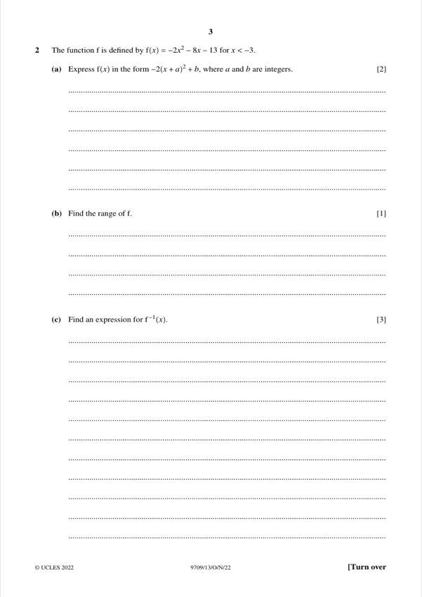
(a) [2] f(x) = −2x² − 8x − 13 (x < −3). Express f(x) in the form −2(x + a)² + b.
f(x) = −2(x + 2)² − 5
(b) [1] Find the range of f.
f(x) < −7
(c) [3] Find an expression for f⁻¹(x).
f⁻¹(x) = −2 − √(−(x + 5)/2)
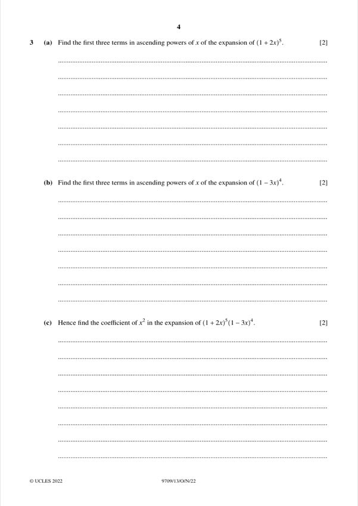
(a) [2] First three terms of (1 + 2x)⁵ in ascending powers of x.
1 + 10x + 40x²
(b) [2] First three terms of (1 − 3x)⁴ in ascending powers of x.
1 − 12x + 54x²
(c) [2] Hence find the coefficient of x² in (1 + 2x)⁵(1 − 3x)⁴.
−26
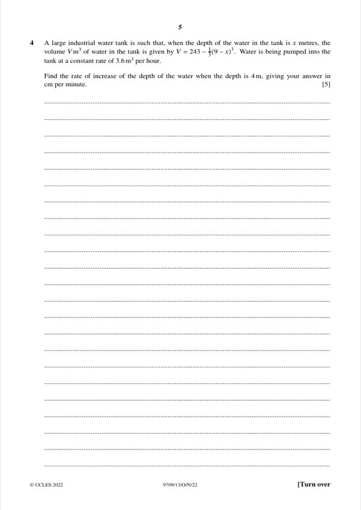
A tank has volume V = 243 − (1/3)(9 − x)³ m³ at depth x m. Water enters at 3.6 m³ per hour. Find the rate of increase of depth when x = 4, in cm per minute.
0.24 cm per minute
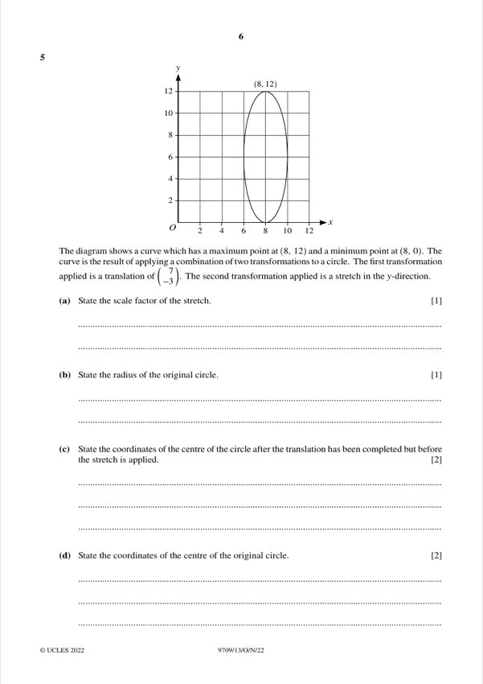
(a) [1] State the scale factor of the stretch in the y-direction.
3
(b) [1] State the radius of the original circle.
2
(c) [2] Centre after the translation (7, −3) but before the stretch.
(8, 2)
(d) [2] State the coordinates of the centre of the original circle.
(1, 5)
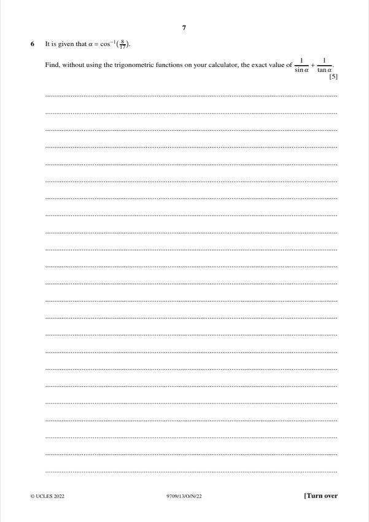
Given θ = cos⁻¹(8/17), find the exact value of 1/sinθ + 1/tanθ without using trigonometric functions on the calculator.
5/3
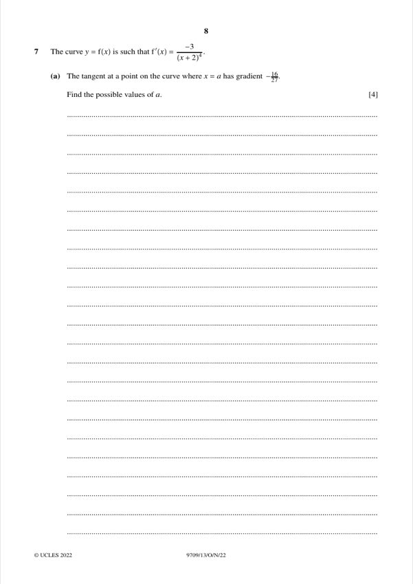
(a) [4] The curve y = f(x) has f′(x) = −3/(x + 2)⁴. The tangent at x = a has gradient −16/27. Find the possible values of a.
a = −1/2 or a = −7/2
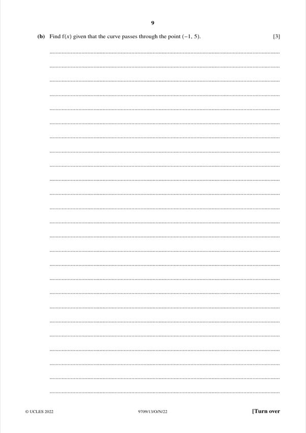
(b) [3] Find f(x) given the curve passes through (−1, 5).
f(x) = 1/(x + 2)³ + 4
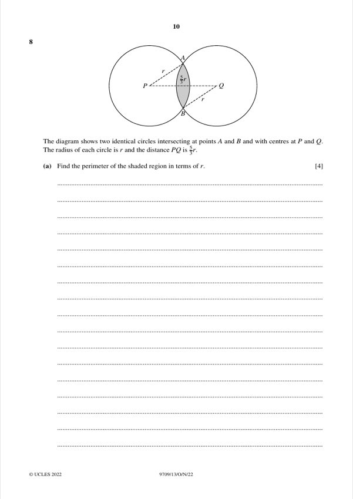
(a) [4] Two identical circles of radius r with centres P and Q, PQ = (5/3)r, intersect at A and B. Find the perimeter of the shaded region in terms of r.
Perimeter ≈ 2.34r
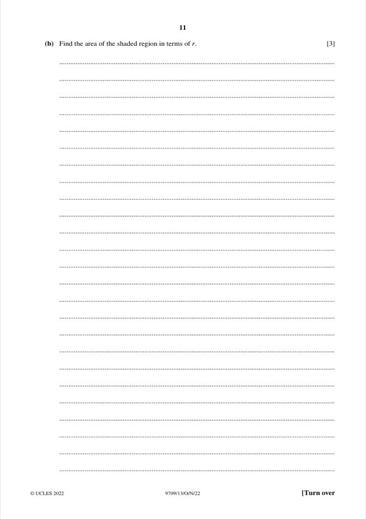
(b) [3] Find the area of the shaded region in terms of r.
Area ≈ 0.250r²
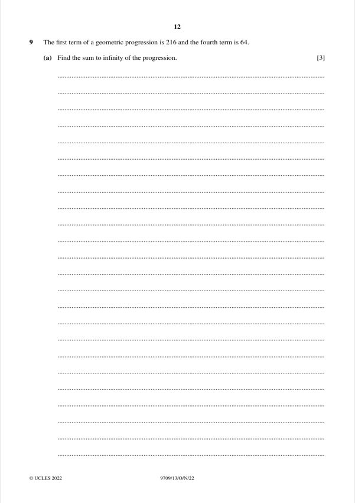
(a) [3] The first term of a GP is 216 and the fourth term is 64. Find the sum to infinity.
S∞ = 648
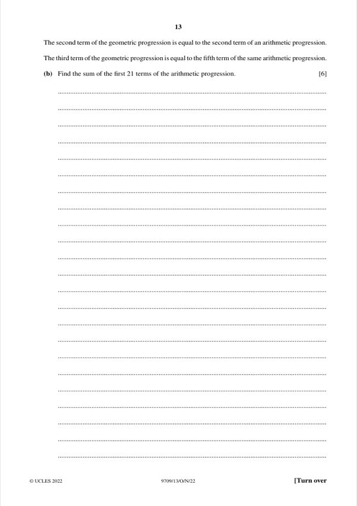
(b) [6] The second term of the GP equals the second term of an AP; the third term of the GP equals the fifth term of that AP. Find the sum of the first 21 terms of the AP.
S₂₁ = 0
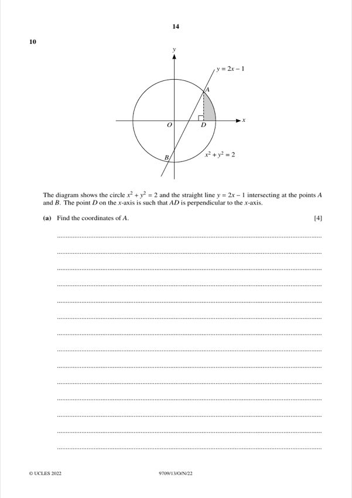
(a) [4] The circle x² + y² = 2 and the line y = 2x − 1 meet at A and B. Find the coordinates of A.
A = (1, 1)
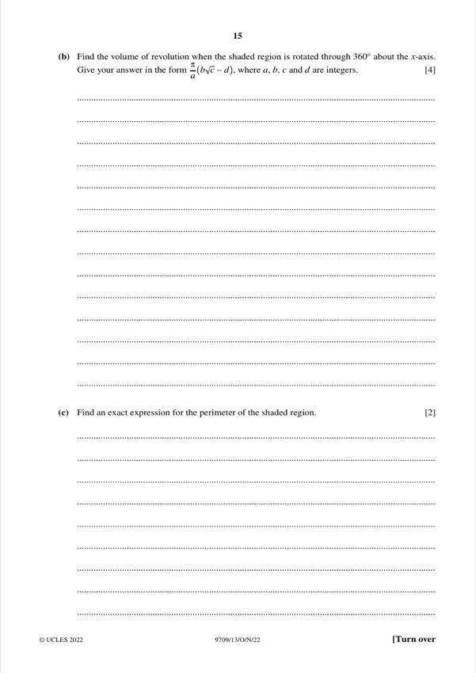
(b) [4] Find the volume of revolution of the shaded region (between x = 1 and x = √2, under the circle, above the x-axis) about the x-axis.
V = (π/3)(4√2 − 5)
(c) [2] Find an exact expression for the perimeter of the shaded region.
√2 + π√2/4 = √2(1 + π/4)
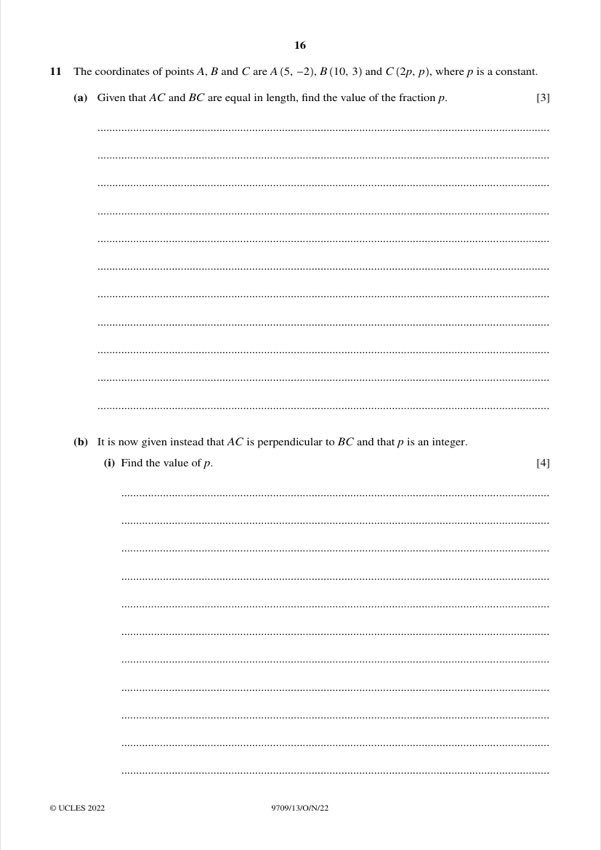
(a) [3] A(5, −2), B(10, 3), C(2p, p). Given AC = BC, find p.
p = 8/3
(b)(i) [4] AC is perpendicular to BC and p is an integer. Find p.
p = 4
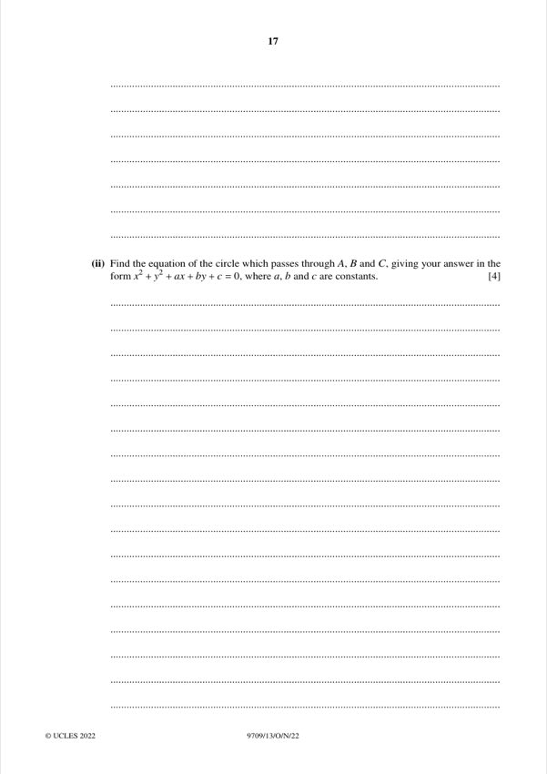
(b)(ii) [4] Find the equation of the circle through A, B and C = (8, 4), in the form x² + y² + ax + by + c = 0.
x² + y² − 15x − y + 44 = 0